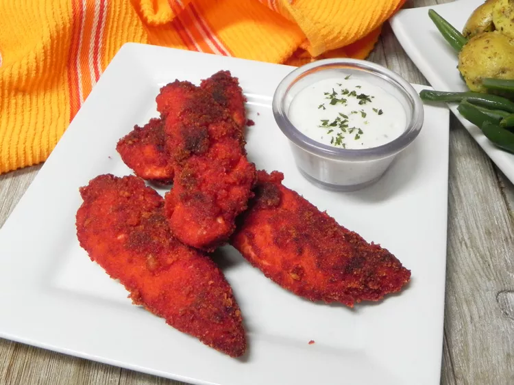

Light Mode
Dark Mode
Double Chocolate Cookies
Origin: Michigan
Source: Family Recipe
Category: Dessert

My daughter learned to make these cookies at a baking camp at Zingermanns and has tweaked the recipe to fit the taste buds of her siblings. They are extremely sugary so the salt helps to balance it. Note, these cookies are best eaten very quickly.
Recipe Ingredients
- Unsalted butter
- Granulated Sugar
- Packed light or dark brown sugar
- Large egg
- Pure vanilla extract
- Semi-sweet chocolate chunks (melted)
- All-purpose flour
- Natural unsweetened cocoa powder
- Baking soda
- Salt
- Semi-sweet chocolate chunks
Recipe Steps
- In a mixing bowl cream together the butter, granulated sugar, and brown sugar
- Add the egg and vanilla extract and beat well
- Add the melted chocolate
- In a separate bowl combine the flour, baking soda, cocoa powder and salt
- Combine the wet and dry ingredients
- Add the unmelted chocolate chunks.
- Form 15 cookies and place on a baking sheet.
- Cooke for 12 to 13 minutes at 350 degrees.


Chocolate Chip Banana Bread
Origin: American
Source: Delish
Category: Dessert

This is a tried-and-tested recipe that I have used numerous times for making the perfect chocolate chip banana bread! Not only does it help utilize the bananas that have slowly overripened at the back of the fridge, it ends up creating an incredibly delicious, and relatively healthy, dessert.
Recipe Ingredients
- Cooking spray
- 2 cups (240 g) all-purpose flour
- 1 tsp. baking soda
- 1/2 tsp. kosher salt
- 1 large egg plus 1 egg yolk
- 1 cup (200 g) granulated sugar
- 1/2 cup (1 stick) unsalted butter, melted
- 1/4 cup sour cream
- 3 ripe bananas, mashed
- 1/2 cup chopped toasted walnuts
- 1/2 cup semisweet chocolate chips
Recipe Steps
- Preheat the oven to 350º. Line a 9"-by-5" loaf pan with parchment and grease with cooking spray.
- In a medium bowl, whisk flour, baking soda, and salt.
- In a large bowl, mix egg, egg yolk, granulated sugar, butter, sour cream, and vanilla. Add bananas and stir until combined. Gradually add dry ingredients to banana mixture until just combined.
- Fold in walnuts and chocolate chips and transfer to prepared pan.
- Bake bread until a tester inserted into the center comes out clean, about 1 hour. Let cool 10 minutes in pan, then invert onto a wire rack and let cool completely.


Flamin’ Hot Cheetos Fried Chicken
Origin: American
Source: All Recipes
Category: Main Dish
This is a recipe that I found on All Recipes and have made a few times. It is a fun twist on fried chicken that is sure to impress your friends and family.
Recipe Ingredients
- 1 cup all-purpose flour
- 1 teaspoon salt
- 1 teaspoon ground black pepper
- 1 teaspoon garlic powder
- 1 teaspoon paprika
- 1 teaspoon cayenne pepper
- 1 teaspoon onion powder
- 1 teaspoon dried oregano
- 1 teaspoon dried thyme
- 1 cup buttermilk
- 1 egg
- 1 (8 ounce) bag Flamin' Hot Cheetos®
- 1 (3 pound) whole chicken, cut into pieces
- 1 quart vegetable oil for frying
Recipe Steps
- Combine flour, salt, black pepper, garlic powder, paprika, cayenne pepper, onion powder, oregano, and thyme in a bowl. Whisk buttermilk and egg together in a separate bowl.
- Place Flamin' Hot Cheetos® in a resealable plastic bag and crush with a rolling pin. Pour into a shallow bowl.
- Dip chicken pieces into the flour mixture, then into the buttermilk mixture, and finally into the crushed Flamin' Hot Cheetos®. Place coated chicken pieces on a plate while coating the rest; do not stack.
- Heat oil in a deep-fryer or large saucepan to 350 degrees F (175 degrees C).
- Fry chicken in the hot oil until golden brown and no longer pink in the centers, about 15 minutes. An instant-read thermometer inserted near the bone should read 165 degrees F (74 degrees C). Drain on a paper towel-lined plate.